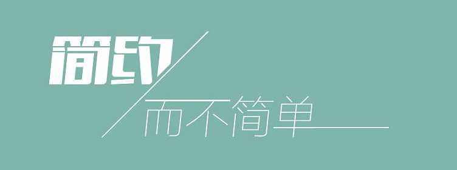
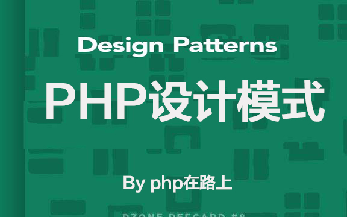

在路上
首页
编程语言
数据库
算法&架构
技术新闻
开源项目
学习生活
Go
PHP
Mysql


推荐
php设计模式(7)单例模式
前言：说完了工厂模式，按我们的《php设计模式(7)前言》中的规划，这次我们来讨论单例模式。
推荐
php设计模式(7)单例模式
前言：说完了工厂模式，按我们的《php设计模式(7)前言》中的规划，这次我们来讨论单例模式。
推荐
php设计模式(7)单例模式
前言：说完了工厂模式，按我们的《php设计模式(7)前言》中的规划，这次我们来讨论单例模式。
推荐
php设计模式(7)单例模式
前言：说完了工厂模式，按我们的《php设计模式(7)前言》中的规划，这次我们来讨论单例模式。
推荐
php设计模式(7)单例模式
前言：说完了工厂模式，按我们的《php设计模式(7)前言》中的规划，这次我们来讨论单例模式。
推荐
php设计模式(7)单例模式
前言：说完了工厂模式，按我们的《php设计模式(7)前言》中的规划，这次我们来讨论单例模式。
推荐
php设计模式(7)单例模式
前言：说完了工厂模式，按我们的《php设计模式(7)前言》中的规划，这次我们来讨论单例模式。
推荐
php设计模式(7)单例模式
前言：说完了工厂模式，按我们的《php设计模式(7)前言》中的规划，这次我们来讨论单例模式。
推荐
php设计模式(7)单例模式
前言：说完了工厂模式，按我们的《php设计模式(7)前言》中的规划，这次我们来讨论单例模式。
在路上
技术无止境，一直在路上。 年过而立，惴惴不安，愈加发奋，孜孜求学。
搜索
热门标签
php
mysql
Golang
Go
图片处理
图片截取
python
PHP7
PPGo_Job
JAVA
docker
PHP闪电入门
设计模式
自学
mysql那些事
PHP异常和错误
算法
工厂模式
架构
sql
PHP算法大全
笑话
幽默
编程随笔
排序算法
程序猿
函数
运维
数据库
数据类型
PPGo_ApiAdmin
点击排行
PPGo_ApiAdmin - golang编写的API管理后台
让程序猿笑出声的8个梗（续）
使用Redis队列解决商品数据大批量上传问题
PHP算法大全(1)基础篇-时间复杂度和...
PPGo_Job跨服务器分发定时任务系统
推荐阅读
PPGo_ApiAdmin - golang编写的API管理后台
让程序猿笑出声的8个梗（续）
使用Redis队列解决商品数据大批量上传问题
PHP算法大全(1)基础篇-时间复杂度和...
PPGo_Job跨服务器分发定时任务系统
友情链接
百度
搜狐
网易
饿了吗
今日头条